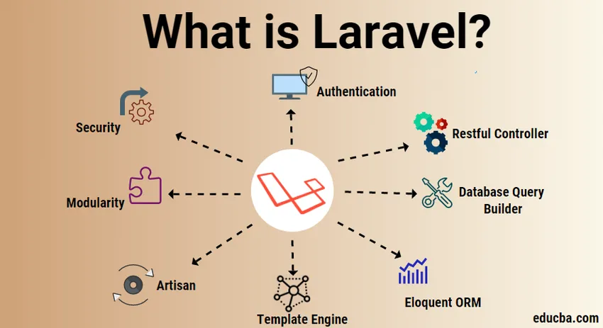

Что такое Laravel
Laravel - веб-фреймворк с открытым кодом, предназначенный для разработки с использованием архитектурной модели MVC. Это лучшая PHP - платформа, которая не только упростит разработку проекта, но и позволит сэкономить средства на его оптимизации и развитии. В результате вы получаете качественный веб-продукт, который выделит вас среди конкурентов. С помощью Laravel специалисты упрощают процесс аутентификации, а также работу с БД, кэширование, сессии, структуру приложения, маршрутизацию и другие не менее важные процессы.
Ключевые особенности Laravel
Фреймворк в Laravel имеет обширную экосистему с немедленным развертыванием, маршрутизацией, шаблонизацией, ORM, запросами к БД и листингом. Теперь рассмотрим количество функций в Laravel Framework.
- Управление
Лидерство в зависимости - одна из важнейших характеристик Laravel, ключевым аспектом изучения современных интернет-приложений является понимание функциональности контейнера услуг (IoC). Самый сильный инструмент для управления зависимостями классов в Laravel - это IoC (Control Invert) или служебный контейнер. Dependency Injection - это средство удаления и введения жестко запрограммированных курсов с помощью инструмента, подобного композитору. - Модульность
Модульность - это степень разделения и рекомбинации частей веб-приложения. Вы можете разделить логику компании на различные компоненты, которые работают вместе для функционирования веб-приложения. Он предназначен для модульного использования, сам Laravel также является набором деталей. Вы можете легко создавать и разрабатывать масштабные корпоративные приложения, используя модульную структуру. Он предлагает очень простое руководство по созданию в Laravel модулей или пакетов. - Аутентификация
Аутентификация является компонентом любого современного веб-приложения. Для написания аутентификации в другой среде, такой как Codeigniter, может потребоваться много времени. Он предлагает блочную аутентификацию, которая позволяет вам создать полнофункциональную схему аутентификации с помощью простой команды. Он также предоставляет удобные документы для вашей собственной аутентификации. - Кеширование
Кэширование - это метод информации, хранящейся на сайте временного хранения, который может быть быстро получен при необходимости Кэширование в основном используется для повышения эффективности приложения. Почти вся информация от перспективы до путей кэшируется в Laravel. Это сокращает время обработки, помогая повысить эффективность. - Маршрутизация
Это просто для понимания маршрутизации в Laravel и аналогично рельсовой раме Ruby. Маршрутизация Laravel может быть использована для простого создания спокойного приложения. Вы можете группировать, называть, фильтровать и связывать информацию о вашей модели с путями. Маршруты Laravel могут быть очень гибкими и управляемыми для создания удобных для поисковых систем URL. - Безопасность
Laravel предлагает интуитивно понятный способ создания безопасных веб-приложений. Вместо обычных текстовых паролей, все пароли сохраняются в виде хэша. Для хеширования паролей, он использует BCrytp. Он обеспечивает безопасность атаки с использованием SQL-инъекций, а также экранирует все пользовательские записи, предотвращая внедрение тегов скрипта. - Миграционная система
Как и Ruby on Rails, он предоставляет систему миграции для создания баз данных. Вместо использования SQL вы можете использовать PHP для написания мигрантов, которые создают структуру вашей базы данных. Вы можете использовать эти миграции для создания баз, таблиц и индексов. Вместо этого вы можете выполнить новую миграцию, если вы хотите изменить столбец таблицы, вам не нужно повторять создание таблицы снова. - Ремесленник
Artisan - это имя инструмента командной строки Laravel. Он включает в себя десятки встроенных команд, которые можно использовать для выполнения задач с интерфейсом командной строки. В процессе разработки этот инструмент позволяет избежать самых повторяющихся задач. - Построитель запросов к базам данных
Создатель базы данных запросов Laravel предлагает простой способ создания запросов к базе данных. Он включает в себя множество вспомогательных функций, которые вы можете использовать для фильтрации ваших данных. Сложные запросы могут быть легко реализованы с помощью ссылок Laravel. Синтаксис построителя запросов Laravel облегчает понимание и удобство написания запросов к базе данных. - Шаблон движка
Клинок - это шаблонный двигатель Ларавела. Blade предлагает несколько вспомогательных функций для форматирования ваших данных в представлениях. Blade также использует шаблон наследия для создания сложных макетов. Расширение файла всех шаблонов блейдов. - Красноречивый
В основе Eloquent ORM от Laravel лежит поддержка почти всех механизмов баз данных. MySQL и SQLite работают отлично. Он предоставляет все красноречивые функции с полной документацией. - Остальные контроллеры
Остальные контроллеры Laravel позволяют вам отделить логику запросов GET или POST. Также возможно создавать контроллеры ресурсов, которые легко использовать для генерации CRUD. Затем вы можете подключить контроллер ресурса к пути, чтобы автоматически обслуживать все пути CRUD.
Возможности фреймворка
- Фреймворк дает возможность работать над приложениями очень быстро, в ходе работы сложный код разработчикам попросту не нужен. То, что в основе Laravel лежит MVC-архитектура, гарантирует доступ ко всему, что надо для создания веб-ресурса.
- Технология предлагает объектно-ориентированные библиотеки. К примеру, аутентификация с многочисленными функциями, дополнительные модули, позволяющие разработчикам создавать более отзывчивые и структурированные продукты, свободное планирование административной части с помощью готовых решений, у которых есть возможность кастомизации либо написать что то свое. MVC структура проекта позволяет легко внедрять любые библиотеки/модули для работы с сайтом: от простых выводов новостей до систем оплат/оформлений заказа. Также предоставляет фреймворк и дополнительные модули, часть из которых можно приравнять к готовым приложениям. Это позволяет экономить средства заказчика при создании проекта.
- Построение логичной архитектуры для проектов любой сложности и типа.
- С помощью встроенной системы тестов разработчики могут выявить проблемы на любом этапе разработки, обеспечить лучший пользовательский опыт. Так как Laravel — передовая технология, то и предлагает она модульное тестирование, которое делает отладку и проверку модуля и его компонентов проще и экономичнее. К тому же, модульный подход снижает количество ошибок, а значит, приложение с большей вероятностью будет работать без сбоев.
- Отправка фоновых заданий для выполнения медленных задач, таких как отправка электронных писем и создание отчетов, при сохранении невероятно быстрого времени отклика. Надежная система очередей Laravel может обрабатывать задания с использованием Redis, Amazon SQS или даже MySQL и Postgres.
- Laravel шаблоны — это мощная и замечательная особенность этой технологии. Каждый шаблон Laravel укомплектован готовыми к использованию плагинами, набором пользовательского интерфейса, списком функций и прочими полезными возможностями, с помощью которых существенно ускоряется процесс разработки приложений. Также шаблонизация не ограничивает специалистов в возможности написать свой код.
- Laravel миграции баз данных упрощают создание и управление БД. Также это позволяет сделать совместную работу разработчиков над проектом простой и структурированной. Например, при в любой момент можно откатить изменения. Это минимизирует риск поломки БД. Идеально сочетается с MySQL, Postgres, SQLite и SQL Server.
- Laravel предоставляет каркасы для безопасной аутентификации на основе сеанса, в то время как Laravel Sanctum обеспечивает безболезненную аутентификацию для API и мобильных приложений.